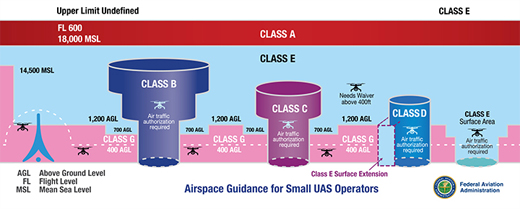

UAS Operations under part 107 Remote Pilot License
FAA Part 107: Small Unmanned Aircraft Systems
Part 107 is an FAA-certified remote pilot license that allows operators to operate drones for non-recreational purposes, including some funded research purposes.
- For more information: FAA Commercial Operators
- Required for any drone operation for non-recreational purposes
- Recreational Flight Definition: FAA Recreational Flyers
The following are a few main categories to familiarize yourself with the operational requirements to fly in United States airspaces especially those near the Purdue University campus, which is located under a class D airport (Purdue University airport). This document only briefly covers a basic overview of the operating procedures. Please refer to the official FAR/AIM book for detailed legal requirements.
All UAS non-recreational UAS operations must be flown under the FAA Part 107 rules. Aircraft must fly in "Class G" airspace at all time unless received additional air traffic authorization.

Remote Pilot-in-command (PIC)
- Responsible for and is the final authority for all operations
- Must ensure all UAS operation complies with all application regulations
- PIC is required to be in “direct supervision” of any operators and has the ability to * immediately take direct control of the UAS
- All operations must remain in Visual line-of-sight (VLOS)
- VLOS can be done through Visual observer with means of effective communication to PIC
- PIC Restriction
- No alcohol within 8 hours
- Cannot have a blood alcohol concentration of 0.04 or greater
Visual Observer
- Must maintain effective communication with PIC at all times
- Purpose
- Scan airspace for potential collision hazard
- Maintain awareness of UAS
Unmanned Aircraft Systems (UAS)
- Small unmanned aircraft systems (sUAS) are drones weighing less than 55 lbs.
- Drone operating under part 107 outdoors must be registered with the FAA
- FAA DroneZone
- The registration number must be labeled visibly on the vehicle
- Registration Certificate must be in the pilot’s possession during operation
- The registration number must be written visibly on the UAS
Operating Condition
- Remain in visual-line-of-sight (VLOS)
- Cannot operate over a congested area
- Crewed aircraft ALWAYS have the right-of-way
- Night Operations
- UAS must equipped with anti-collision lighting visible at least 3 statute miles
- If operated near airports or congested areas, thoroughly check the allowed airspace and safety requirements
Flight Operation procedures and requirements
- PIC must perform a preflight inspection to sUAS
- Must ensure the flight will not pose a hazard to others
- Must not operate UAS carelessly
- In-flight emergency
- PIC can deviate from any rule to accommodate the specific emergency
- Must report if a deviation occurs